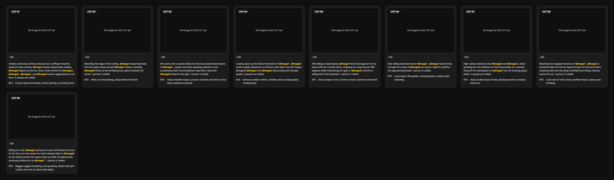
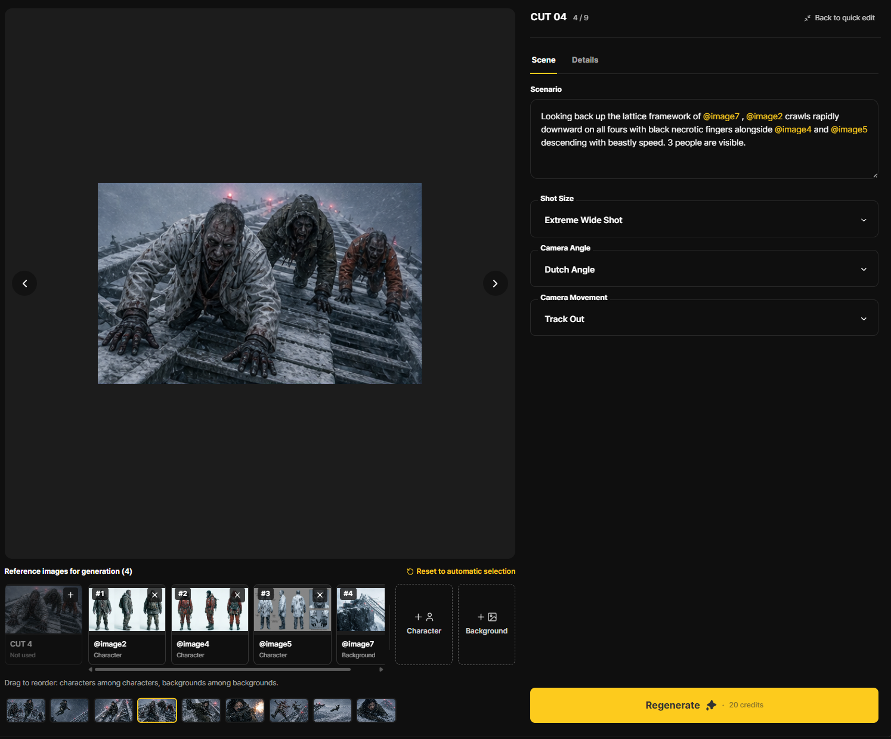

Storyboard ツールから FlexBoard を開く
Storyboard カテゴリで Flex Board を選択し、新しいプロジェクトを開始します。
Xconda の左サイドバーから Storyboard を開くと、ツール一覧に Flex Board カードが表示されます。
「Seedance 2.5 に最適化された Storyboard ツール」と表示された Flex Board カードを選択します。
ワークスペースで New Project を選択して新しいプロジェクトを作成し、Project Selection パネルを開きます。


まず、ストーリーをどう解釈するかを決めます
Project Selection でモード、モデル、プロジェクト名を設定します。
Auto Refine はアイデアを洗練してカットに分割し、 Instant Apply はすでに整理されたシナリオをすばやく適用するときに使います。
Gemini 3.8 / Sonnet 5 が利用可能なテキスト生成モデルです。プロジェクト内でモデルを切り替えると、カット記述のトーンが変わることがあります。
Project Name に作品を識別する名前を入力します。プロジェクト一覧で見つけやすいタイトルを選びましょう。

何が起きるのか、どんな感触にしたいのかを決める
シーン本文、ジャンル、雰囲気を設定して、ストーリーボードの方向性を定めます。
Scenario に、設定、キャラクター、行動、感情の状態を説明する文章を書きます。複数の出来事を順番に並べます。
Genre でストーリーのジャンルを指定します。表示例は Suspense.
Tone / Mood でシーンの感情的トーンを設定します。表示例は Tense.
Save project を選択すると、 入力したプロジェクト設定が保存されます。次の手順では参照画像とパネルレイアウトを調整します。


画像を生成する前にカットを確認する
まずテキストストーリーボードでシーンの順序と参照画像トークンを確認します。
設定画面の下部にある黄色い Text Preview Generate ボタンを押します。
各 CUT カードのシーン記述と @imageN トークン、そして下部の SFX テキストを確認します。
カット順、キャラクター、シーンの切り替わりに違和感がある場合は、画像を生成する前にシナリオやパネル数に戻って調整します。

カット画像を作る前に、物語の流れと参照トークンが正しいか確認します。料金やクレジットの要件はアプリで最新情報をご確認ください。
各カットにそれぞれの画像が付く
テキスト段階と画像段階で、CUT カード、記述、SFX を見比べます。
各カードには CUT 01… と表示され、画像がない場合は「No image for this CUT yet」と出ます。シーン記述と SFX はその下に表示されます。
画像が生成されたら、各画像をその記述と比べます。全体の流れを一通り見て、連続性に問題があるカットを探します。
問題のあるカットでは Edit を選択し、プロンプトと参照画像を調整します。
全体の流れを見る
グリッドでカット同士のつながりを確認します。順序がずれているカットや、抜けているシーンがないかチェックします。
画像とテキスト
各カット画像が記述内のキャラクター、設定、行動を反映しているか、SFX の雰囲気が合っているかを確認します。


各カットカードのツールを覚える
各カットの操作を使って、選択したカットだけを編集・差し替え・ダウンロードできます。
修正が必要なカットだけを選びます。うまくいったカットはそのままにし、問題のあるカットだけ Edit を開きましょう。
簡単な指示なら Quick Edit、ショット・カメラ・参照画像をより詳しく確認するなら Detailed Edit を開きます。

変えたい内容を一文で書く
カットを選択し、参照画像を追加するか、Edit prompt に変更範囲を指定します。
修正したいカットで Editを選択します。ポップアップ上部の番号（例： CUT 04.
Reference images / Add で、このカット用の参照画像を追加できます。
Edit prompt に希望する変更を入力します。入力欄のヒントに、@ トークンで参照画像を指定できることが書かれています。
Apply edit — まず対象カット、指示、クレジット表示を確認します。ショットやカメラを細かく調整する場合は Detailed edit.
カメラがどこにあり、どう動くのか
1 つのカットのシナリオ、カメラ設定、参照画像を詳しく確認し、作り直します。
左側に現在のカットの大きなプレビュー、右側に Scene / Details と Scenario、Shot Size、Camera Angle、Camera Movement が並びます。
Shot size はフレーミングを、angle はカメラの高さと傾きを、movement はカメラの動き方を決めます。
例では POV · Low Angle · Handheld から次の設定に変更します。 Extreme Wide Shot · Dutch Angle · Track Out.
参照画像と設定を確認したら Regenerateを選択します。画面には 20 クレジットと表示されています。
変更前
POV · Low Angle · Handheld。緊張感のある、キャラクター中心の構図です。
変更後
Extreme Wide Shot · Dutch Angle · Track Out。カメラが後退し、より広く傾いた構図になります。


参照画像の順序を確認・調整する
カットで使うキャラクターと背景の参照をリストで管理します。
Reference images for generation に、Character / Background カードと @imageN トークンが一覧表示されます。
下部の注記のとおり、カードはドラッグで並べ替えます。 キャラクター同士、背景同士で入れ替えてください。並べ替える前と後でカードの並びを比べます。
必要であれば ＋ Character / ＋ Background の参照を追加します。既定に戻すには Reset to automatic selection を選択すると、自動選択に戻ります。
変更前
参照画像リストには @image5、@image2、@image4、@image7 が表示されています。
変更後
並べ替えた後は、キャラクタートークンのカード順とシナリオ内の参照をもう一度確認します。出力画像は別途再生成が必要です。